Introduction
Fedora Administrator is the direct link to API-M functionality for repository administrators. Using this tool it is possible to ingest, search for and retrieve, modify and purge data objects and build, search for and retrieve, modify, and purge behavior objects (Behavior Definitions and Behavior Mechanisms).Starting Fedora Administrator
navigate to the $FEDORA_HOME/client/bin directoryfedora-admin [hostname] [port] [user] [pass]
For example, fedora-admin localhost 8080 fedoraAdmin fedoraAdmin will start the GUI for a server running on the local machine, port 8080, where "fedoraAdmin"has been used both as the name and password of the server administrator.

Added in the 2.1 release of Fedora is the authentication dialog. When you start Fedora Administrator, you will be asked to choose the server to which you wish to connect, the protocol you wish to use to connect to your Fedora repository (http or https), your username and password. The server and username fields are pre-populated and the password is validated using values from fedora.fcfg
Menus
Fedora Administrator has been designed with standard GUI based menus. The following menus are available in the Fedora Administrator window:- Builders
- Window
- Help
File Menu
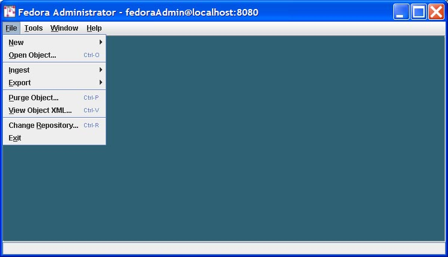Commands on the file menu allow a repository administrator to perform operations on objects in the repository or to log in to a different repository.
New Object
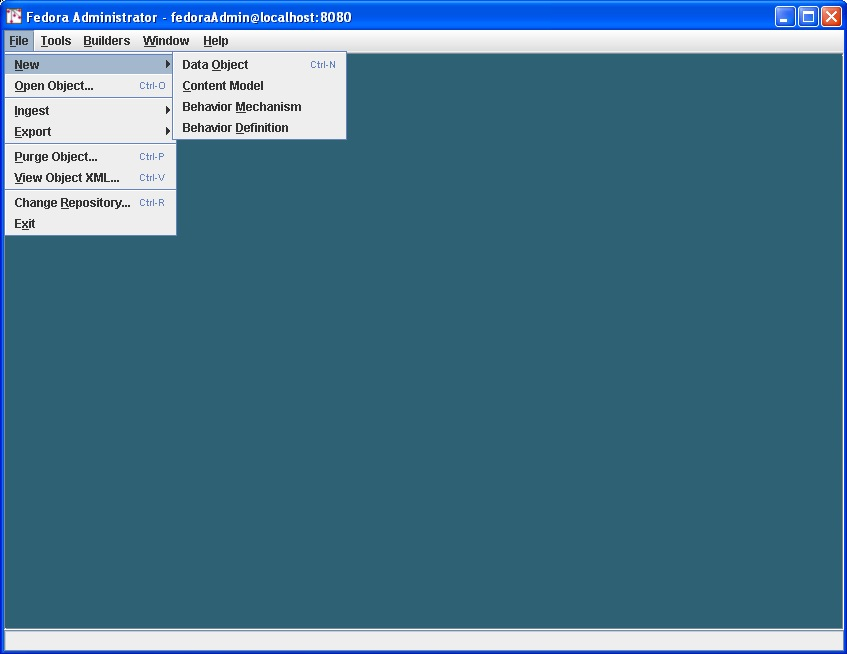The New menu option allows users to build new Fedora objects from pre-existing component parts. When the New...Data Object option is selected a skeletal Fedora data object is ingested into the repository and the repository administrator/object owner then completes the object by defining a Behavior Definition and Behavior Mechanism for the object, adding datastreams, and finally binding disseminators and datastreams together.
Users may also create behavior definition and behavior mechanism objects by selecting these submenu options. The complex task of building WSDL objects dictated the necessity of onscreen, context sensitive help screens for these builders. Clicking the Help button on any pane in the Behavior Definition Builder or Behavior Mechanism Builder will open a popup help screen defining each field in view.
Creating a New Data Object
This section provides instructions for building a new data object using Fedora Administrator.
On the File Menu, select New.
From the New submenu, select Data Object.
The New Object Dialog appears.
Fill in the label data for the object and the identifier for a content model to which the data object subscribes. If a custom PID is desired, click the check box and fill in the PID value.
Clicking Create causes a Fedora data object to be created and ingested into the repository. The new object is displayed in a tabbed pane showing the following tabs: Properties, Datastreams, and Disseminators. You will first be presented with the Object Properties pane. On this pane you can add the following information:
State: The state of the object, defined as follows:
Active: the object is available to users conditional upon any access control policy restrictions
Inactive: the object is only available to repository administrators.
Deleted: the object has been marked for permanent removal from the repository, pending review by repository administrators.
Label: A description of the digital object
Owner: An identifier for the owner of the object
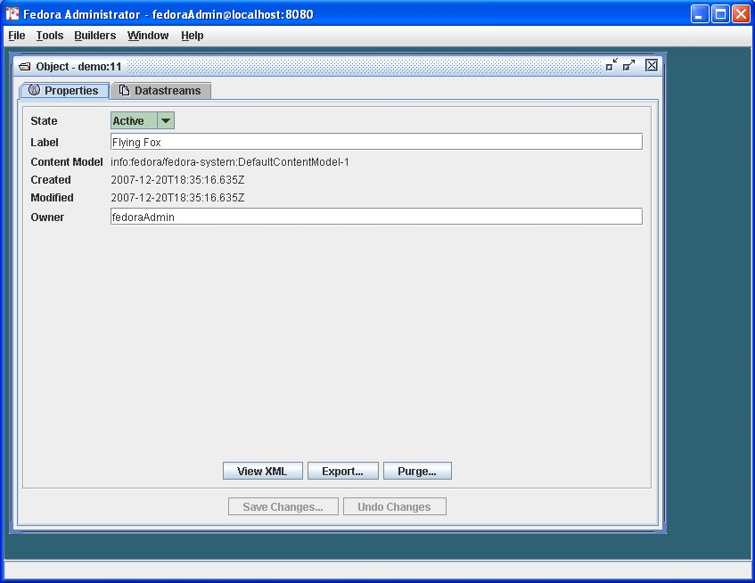
View and Modify the Default Dublin Core Datastream
Click on the Datastreams tab labeled as "DC." The display will show a side tabbed pane displaying all datastreams currently in the object. When first created, all Fedora data objects will contain a default Dublin Core metadata datastream. You can edit this metadata datastream, adding fields as appropriate for the data object in question. To add new Dublin Core elements, edit the XML content for the datastream in the editing window. When done editing, click the Save Changes button on the bottom of the pane.
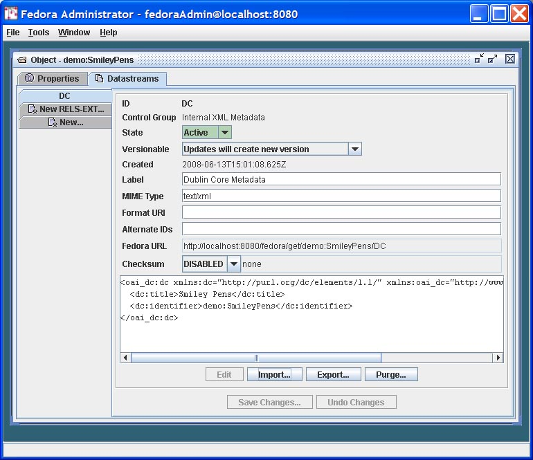
Creating a New Datastream in the object
To create a new datastream in the digital object, click on the side tab labeled "New..." You are presented with a dialog window that provides data input fields to enter all attributes for a datastream. Enter the following information:
1. ID: Enter a custom identifier for the datastream. If left blank, the system will automatically assign a unique datastream id
2. Control Group: Clicking through the control group options will show text defining each control group option. The Control Group lets you decide how you want the datastream content to be associated with the digital object. Datastream content can be in-lined within the object XML container file, it can be stored in the repository, or it can be stored external to the repository (and digital objects point to the external location).
- Internal XML Metadata: In this case, the datastream will be stored as XML that is actually stored inline within the digital object XML file. The user may enter text directly into the editing window or data may imported from a file by clicking Import and selecting or browsing to the location of the XML metadata file.
- Managed Content: In this case, the datastream content will be stored in the Fedora repository and the digital object XML file will store an internal identifier to that datastream. To get content, click Import and select or browse to the file location of the import file. Once import is complete, you will see the imported file in a preview box on the screen.
- External Referenced Content: In this case, the datastream content will be stored outside of the Fedora repository, and the digital object will store a URL to that datastream. The datastream is "by reference" since it is not actually stored inside the Fedora repository. While the datastream content is stored outside of the Fedora repository, at runtime, when an access request for this type of datastream is made, the Fedora repository will use this URL to get the content from its remote location, and the Fedora repository will mediate access to the content. This means that behind the scenes, Fedora will grab the content and stream in out the the client requesting the content as if it were served up directly by Fedora. This is a good way to create digital objects that point to distributed content, but still have the repository in charge of serving it up. To create this type of datastream, specify the URL for the datastream content in the Location URL text box.
- Redirect: In this case, the datastream content is also stored outside the repository and the digital object points to its URL ("by-reference"). However, unlike the External Referenced Content scenario, the Redirect scenario signals the repository to redirect to the URL when access requests are made for this datastream. This means that the datastream will not be streamed through the Fedora repository when it is served up. This is beneficial when you want a digital object to have a datastream that is stored and served up by some external service, and you want the repository to get out of the way when it comes time to serve the content up. A good example is when you want a datastream to be content that is stored and served by a streaming media server. In such a case, you would want to pass control to the media server to actually stream the content to a client (e.g., video streaming), rather than have Fedora in the middle re-streaming the content out. To create a Redirect datastream, specify the URL for the content in the Location text box.
3. State: Set the state for the digital object as Active, Inactive, or Deleted. The object states are defined as follows:
Active: the datastream is available to users conditional upon any access control policy restrictions
Inactive: the datastream is only available to repository administrators.
Deleted: the datastream has been marked for permanent removal from the repository, pending review by repository administrators.
4. Versionable: You can decide on a datastream-by-datastream basis whether the Fedora repository will version the datastream when modification are made. By default all datastreams are versioned, but you can override this with the Versionable drop down settings. If you select "Updates will create new version," a new version of the datastream will be created when any change is made. All previous versions of the datastream will be maintained. If you select "Updates will replace most recent version" then any changes will overwrite the most recent version of the datastream. In the "replace" case, if there is already a previous version history of the datastream it will be maintained (it will not be lost if you change to the "replace" option at some point in the future after you have been versioning a datastream).
5. MIME Type: Select the MIME type for the datastream content.
6. Label: Give your datastream a descriptive label.
7. Format URI: Optionally, you can provide a format identifier for the datastream. Examples of emerging format identifier schemes found in PRONOM and the Global Digital Format Registry (GDRF).
8. Alternate IDs: Optionally, you can assign one or more alternate identifiers for you datastream. Such identifiers could be local identifiers or global identifiers such as Handles or DOI.
9. Checksum: The Fedora repository has a global setting for enabling datastream checksums to be calculated by the repository when a datastream is created or modified. See the Fedora system documentation of repository configuration for details. Also, refer to the system documentation on Checksum Features for a complete discussion of this functionality. A checksum is calculated on datastream content (it does not include the various attributes of a datastream such as its identifier, state, or mime type). In the datastream creation dialog pane, you will see a drop down list where you can select a checksum algorithm. This gives you some control for how you would like the checksum handled for a particular datastream. (Or you can let the default repository behavior take over.) The following can be accomplished using the checksum data entry box:
- If you select "Default" in the checksum drop down list, the repository will handle everything based on how it is configured. This means that if the repository is configured to automatically checksum datastreams, it will use a default checksum algorithm configured for the repository, it will calculate a checksum for the datastream, and store it.
- If you select a particular checksum algorithm from the drop down list box, you are essentially telling the repository that whatever it has configured for datastream checksum, you wish to override that behavior for this particular datastream. By specifying an algorithm you are telling the repository to calculate a checksum for that datastream using that algorithm that you specify.
- When you select a checksum algorithm from the drop down box, you will notice that a text entry box appears next to it. You can leave the box blank, and the repository will use the specified algorithm and calculate a checksum values. You have another option too, that is to provide the repository with a checksum value that you have already calculated. In this case, the repository service will still calculate a new checksum when it creates the datastream, but if you provide a value from the client end, the repository will use it as an integrity check to ensure that the client and the server both agree on the checksum value for the datastream content. The repository will calculate a checksum value, using the algorithm you specify, and then it will compare its checksum calculation with the checksum value you provided in the text box. If they match, that means that the datastream content was not altered in the transmission from the client to the repository service. If they don't match, that indicates that something happened to the datastream during the transaction, and the repository will throw an exception.
10. What about the Datastream Content? Depending on the datastream control group that you selected, the user interface will present you with a different way to get the actual content for your datastream.
- If you selected "Internal XML Metadata" you will see an editing window at the bottom of the pane for creating XML content. Alternatively, you can use the "Import" button to insert XML content from a file.
- If you selected "Managed Content" you will see an "Import" button on the bottom of the pane. Click this button to select a file whose content will be pulled into the repository and stored as managed datastream content. The digital object will have an internal pointer to the repository stored content.
- If you selected "External Referenced Content" a new text entry box labeled "Location" will appear where you are prompted to enter a URL for content stored external to the repository. The digital object will store this URL, and the content will NOT be copied into the repository. It will remain "by-reference." You will notice a "View" button appear at the bottom of the pane that allows you to preview the content.
- If you selected "Redirect" you will also enter a URL in the "Location" text entry box.
When all information is supplies in the add Datastream pane, click the Save Datastream button. This will send an API-M request to the Fedora repository service to add the new Datastream to the digital object. A completed Datastream pane is depicted below.
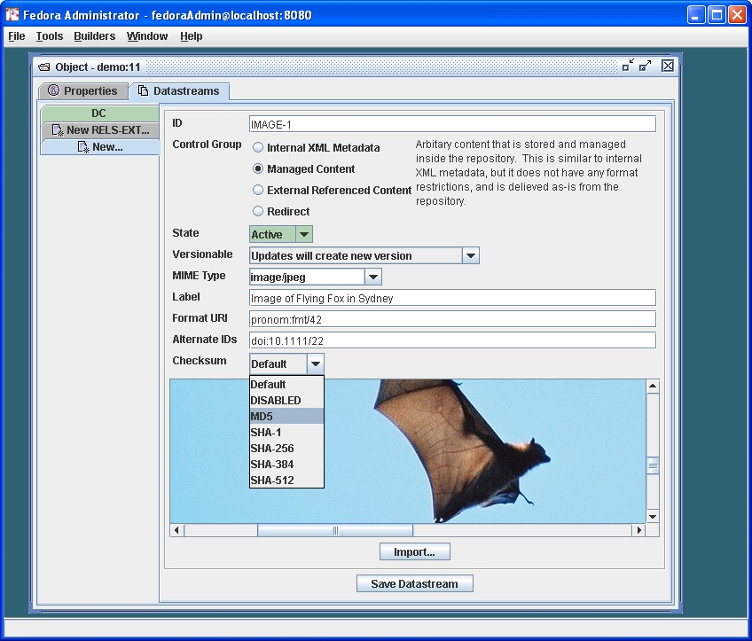
Adding a Disseminator to an object
Optionally, you can add a disseminator to the digital object to provide dynamic view of datastream content. A disseminator essentially associates a service definition with the object, with information about which datastreams in the object should be used as input to the service to produce dynamic views. The basic idea of a disseminator is discussed elsewhere, particularly in Tutorial 2 found in the system documentation.
To create a disseminator, click the Disseminator tab to bring that pane to the front. On this tab, you can provide a descriptive label for the disseminator. Your main tasks will be to select a pre-existing service definition (a Behavior Definition Object) and a pre-existing service implementation (a Behavior Mechanism Object). As described in Tutorial 2, these are special control objects that your repository administrator will have already ingested into your Fedora repository (or you can ingest them too.) The task of creating a disseminator is to know what kinds of services you have on hand, and what kinds of objects (they are compatible with). By creating a disseminator, you don't actually store the behavior definitions or mechanisms with the digital object. You just point to the control objects in the repository that contain metadata that describes the service and how to bind to the service. Once these relationships between your digital object and the control objects are established (via the disseminator), then the repository can use the information found in the control objects at run time to provide dynamic views of the digital object.
First, select the type of Behavior Definition (service) you want to associate with the object using the drop down list box:
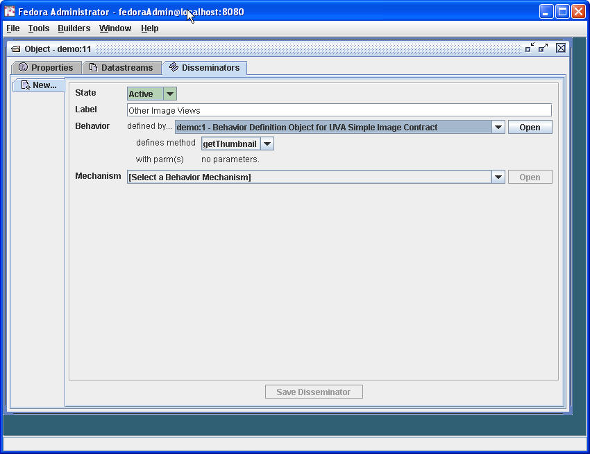
Once the Behavior Definition has been selected, the pane will display a list of specific behavior methods that are defined by the Behavior Definition, and the Behavior Mechanism drop down menu will appear. The Behavior Mechanism drop down prompts you to select a particular implementation of the service that is defined by the Behavior Definition object you selected. The idea here is that the same set of abstract behaviors (abstract service definition) may have been implemented by one or more service providers. If there are multiple implementations, you choose which one you want to have associated with this digital object.
Select a Behavior Mechanism from the drop down menu as follows: The values in the menu are pre-populated based on the Behavior Definition chosen in the previous step. Once the Behavior Mechanism is selected, the Bindings tabs are shown for each method required by that Behavior Definition/Behavior Mechanism pairing.
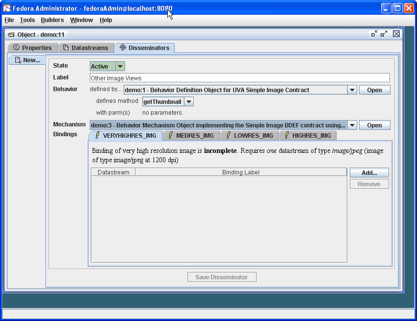
The final step is to specify which datastreams in your object can be used as input to the Behavior Mechanism (service implementation). To do this look at the tabs that appear next the the words "Bindings" on the bottom area of the pane. Each tab represents an input requirement for the selected Behavior Mechanism. In the example above, we have selected a Behavior Mechanism that allows simple image behaviors and the mechanism wants you to tell it which datastream in your object fulfill the roles of different image resolutions. The assumption in this example is that you created an object that has a datastream for each of four image resolutions (low, medium, high, very high). One by one, click the binding tabs. There will be a message that tells you the kinds of datastreams that can be used (in terms of their MIME types). Select the "Add..." button to the right to select a particular datastream from your digital object to fulfull the role of the mechanism binding. A pop up dialog box will appear listing all datastreams that meet the MIME Type requirement for that tab as seen below.
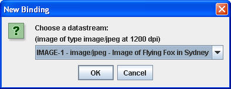
Click the drop down list to see all possible datastreams that can be bound. Click OK when you find an appropriate datastream. At this point you will be returned to the Disseminator creation pane and you will see that the selected datastream has been associated with a particular binding for the Behavior Mechanism that will perform image services. In this example, the datastream that we created earlier (the Flying Fox in Sydney JPEG) is now associated with a binding known as "HIGHRES_IMG) Continue to click through the other binding tabs to associate a datastream with each binding that the Behavior Mechanism specifies.
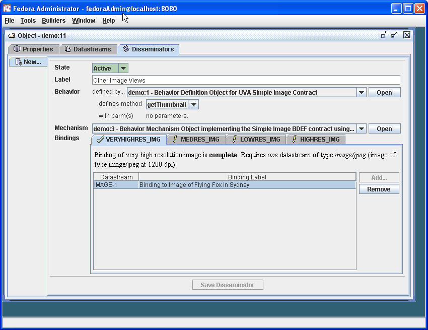

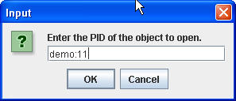
The Open menu requires input of an object PID for retrieval of the object. Upon retrieval, the object is displayed on three tabbed panes: Properties, Datastreams, and Disseminators. You can edit any aspect of a digital object from these panes, in the same way information was added via the panes (as described earlier). Some addition functions are available on the Object Properties pane for an existing digital object:
The Object Properties Pane
Viewing XML: From this window, the XML of the object can be viewed, but cannot be modified.
Export Object: If Export is selected, the user will be prompted for a file name and location to which to write the XML file. The format for exported objects is fedora:mets.
Purge Object: Purging an object completely removes it from the repository. Upon selecting the Purge option, the user will be prompted to enter a reason for the object's removal. Please note that objects with dependencies in the repository cannot be purged. WARNING: There is no "Are you sure" dialog with this option and the purge cannot be undone.
The Datastreams Pane
On the Datastreams Pane, the state of each datastream in the object can be modified, along with the datastream label and location. The MIME type of the datastream is shown, along with the control group, info type, create date, and the Fedora URL of the object
Datastream States
Active: the datastream is freely available to all users.
Inactive: the datastream is only available to repository administrators.
Deleted: the datastream has been marked for permanent removal from the repository, pending review by repository administrators.
From this pane, users may additionally request to view a datastream, add a new datastream to the object, export a datastream's contents, or purge the datastream from the object.
Editing Datastream Content: If a datastream has a text MIME type (e.g., text/xml, it may be edited in place by clicking the Edit button and making the desired changes in the editing window. or to export the data contained in the datastream by clicking the Export button. If the datastream is not linked to an active disseminator, it may be purged from the object. Only datastreams with a text MIME type may be edited directing from the Datastream pane. Datastreams with other MIME types (e.g., image or application, e.g., image/jpeg or application/pdf may only be viewed, exported, or purged from the object.
Import: Choose this button to import new data by clicking the Import button. You will be prompted for a file name or url where the the import file is located.
Export: Choose this button to export the content of a datastream. You will be prompted for a file name and location to which to write the XML file of the datastream content.
Purge: Choose this button to remove a datastream from the object. You will be warned that the operation is permanent and must click "Yes" to continue. If "Yes" is selected, the datastream is immediately purged from the object. Purge is not valid for the DC metadata datastream because it is always linked to the default disseminator. Please note that datastreams which are linked to active disseminators may not be purged. You must first purge the disseminator, then the datasreams.
When selecting to ingest objects from the File menu, users have the option of ingesting a single object or multiple objects.
Objects may be ingested from a file or from another repository.
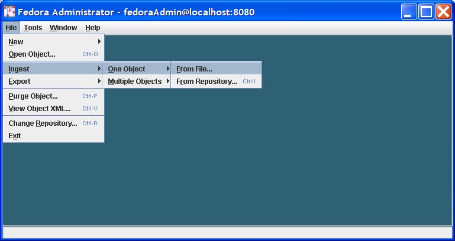
Ingest From File: Choosing Ingest One Object from File, the user is prompted to select the file name from a dialog box or browse to the location of the file on the local drive(s) for the file to be ingested. Clicking Open will cause the file to be ingested. If the repository has been set to retain PIDs on ingest in fedora.fcfg, the PID in the object XML will be maintained. Otherwise, the PID will be overwritten.
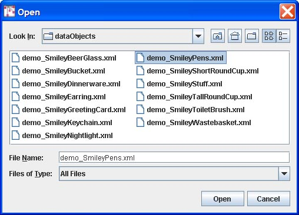
Ingest From Repository: Choosing Ingest One Object from Repository causes the Source Repository dialog box to appear. The user must fill in the hostname: port of the source repository, the protocol (http or https) and enter a username and password. Clicking OK initiates the Input dialog, where the user is prompted for a PID value. Clicking OK on the Input dialog completes the object ingestion.
Users may also ingest all the files in a directory or all the files of a specific object type in a repository by selecting the Ingest Objects by Type submenu item. There are three basic types of objects in Fedora: Data Objects (your regular objects that you create), Behavior Definition Objects (control objects that store a service definition), and Behavior Mechanism Objects (control objects that store service binding metadata such as WSDL).
Ingest From Directory: Upon selecting Ingest Objects By Type from File, a dialog box prompts the user to select or browse to the directory containing the objects to be selected. Once the directory has been identified, clicking Open will activate a second dialog box which prompts the user to select the type of object to be ingested behavior definition, behavior mechanism, and/or data object.

It should be noted that if you have created control objects (Behavior Definition and Mechanism objects), any regular Data Objects that depend on them should be ingested after the control objects are ingested. You don't want to try to ingest Data Objects with dependencies on control objects that don't exist. However, If you select all three types of objects together, Fedora will ensure that the control objects get ingested first. If you are ingesting one kind of object at a time, Behavior Definition Objects should be ingested before Behavior Mechanism objects that depend on them. Then, Data Objects can be ingested that depend on the Behavior Definition/Mechanism objects.
If the repository has been configured to "retain PIDs" on ingest (see the Fedora repository configuration documentation), then whatever PID is found in the ingest XML file (also known as the Submission Information Package or SIP) is what the repository accepts as the PID for the new ingested digital object. If the "retain PIDs" option is not enabled for the repository, the ingest function will automatically assign a new PID to the digital object, and ignore whatever PID was in the ingest XML file.
Ingest From Repository: Choosing Ingest Objects by Type from Repository causes the Source Repository dialog box to appear. The user must fill in the hostname: port of the source repository, and enter a username and password. Clicking OK causes the Select Object Type dialog to appear. Selecting the types of objects to be ingested from the source repository--behavior definitions, behavior mechanisms, or data objects--and clicking OK initiates ingestion of all objects of that type from the source repository.
During ingest, the status bar at the bottom of the Fedora Administrator window shows the activities of the server. Once ingest is complete, a summary pane will appear giving counts of objects successfully ingested, objects failed, and time elapsed. Click OK to clear this message. The View Ingest Log dialog will then open. The user may click Yes and view the detailed log file or No to view the file at a later time. The log file is created in the $FEDORA_HOME/client/logs/ directory.
Users have the option of exporting a single object or exporting objects by type. This functionality can be used from the File/Export menu.
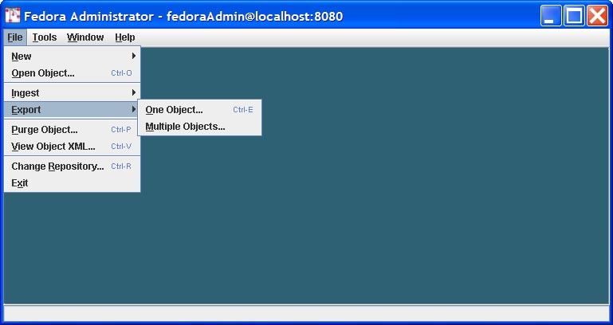

When the Export One Object option is selected, the user is prompted to select a directory to which the export file will be written. Clicking Open causes the user to be prompted for an object PID. The PID will be used as the basis for the export file (named like [pid].xml). Before the export is done, you must first provide a few more pieces of information. First, you must choose the export serialization format, either FOXML or METS (the Fedora extension of METS). Next you must provide the "export context" which will create an appropriate export file for the context in which you plan to use it. There are three export context types to choose from:
- Migrate: an export file will be create that is appropriate for migrating into another Fedora repository. This means that any references to the repository's base URL (with its host and port) will be virtualized, so that if the export object is subsequently ingested into another Fedora repository, the object will inherit the base URL of the new repository. The result is that repository-referential assertions in the exported digital object will naturally adapt to the new repository environment.
- Public Access: an export file will be created that is appropriate for facilitating public access and re-use of the digital object. All datastream locations will be resolvable URLs, most notably, the Managed Content datastreams will contain public callback URLs to the repository from which the object was exported. The assumption is that the repository will still exist, and that the original object will continue to be served up by the repository (so the callback URLs continue to work).
- Archive: an export file will be created with all managed content contained within it. This means that all Managed Content datastreams will have the datastream content Base64-encoded within the digital object export file. For Referenced and Redirected datastreams, their by-reference URLs will be in the export file (meaning that the repository will not pull the external content into the export file, but keep it by-reference). For datastreams that were of type "Inlined XML" the XML will remain in-lined as it normally is the the digital object XML file.
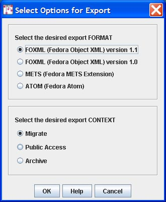
When the Export Object by Type option is selected, the user is prompted to select a directory to which the export files will be written. Clicking Open causes the user to be prompted for which type of object is to be exported--behavior definitions, behavior mechanisms, or data objects. The default selection is data objects. When the file types are selected and OK is clicked, the system searches for and retrieves all objects of that type, which are then exported to individual files in the destination directory. The files are named pidvalue.xml.

Purging an object completely and permanently removes it from the repository. Upon selecting the Purge option, the user will be prompted to enter an object PID and a reason for the object's removal. Please note that objects with dependencies in the repository cannot be purged. WARNING: There is no "Are you sure" dialog with this option.
This menu option allows a user to view the xml, but not edit. XML may be cut and pasted into another application using standard keyboard commands of the host operating system, (e.g. CTL-C, CTL-V in Windows) if desired.
The Change Repository option allows a repository administrator to login to a different Fedora repository. When selected, this menu option causes the Login dialog to be displayed. The repository administrator may then select a different Fedora server with which to connect, entering the appropriate login name and password.
The Exit menu option closes all connections with the Fedora server instance and logs the user out of the repository.

Commands on the Tools menu provide the user with the ability to search and retrieve objects from the repository, build and ingest batches of digital objects, and under the console submenu, gain access directly to API-M and API-A methods for testing purposes.
The Search/Browse Repository menu option provides a mechanism for searching and retrieving objects from the Fedora repository. Upon ingestion, metadata from the Fedora System Metadata section and the Dublin Core (DC) Metadata section of the object are indexed in a relational database, and may be searched using this menu option. The DC Metadata section is an optional Implementer-Defined XML Metadata datastream in the object, where the Datastream ID is DC, and the XML conforms to the schema at http://www.openarchives.org/OAI/2.0/oai_dc.xsd. If a Dublin Core metadata datastream is not provided, Fedora will construct a minimal DC datastream consisting of the elements dc:title and dc:identifier. The value for dc:title will be obtained from the object's label (if present in the object) and the value for dc:identifier will be assigned to the object's persistent identifier or PID.
The search interface provides both simple and advanced searching. All queries are case insensitive. Simple Search enables queries of words and phrases occurring anywhere in than object's indexed metadata fields. Advanced Search enables fielded searching across any combination of metadata elements using string comparison operators ( = and ~ ) for string fields, and value comparison operators ( =, >, ≥, <, ≤ ) for date fields (dc:date fields may be treated as both). The wildcards, * and ? may be used in any string-based query.

The Simple Search tab is the default selection in the Search Repository window. The Simple Search query searches both the Dublin Core metadata and the Fedora System Metadata fields.
At the top of the Search window, the user may select fields to be displayed by clicking the Change button and selecting/deselecting field names from the dialog.

The Simple Search searches all indexed metadata fields for the text entered into the text box. All searches are case insensitive. The wildcard character '*'; can be substituted for any string of characters. The wildcard character '?'; can be substituted for any single character. Clicking Search will retrieve a list of objects where the entered text string appears in an indexed metadata field.

The Advanced Search query enables users to refine their repository search by searching specific fields for specific values provided in the query.

The search conditions can be modified by clicking the Add button, which opens the Enter Condition dialog. The user selects the field to be defined from the drop down menu, selects the condition to be matched, and enters the text to be matched, if appropriate. Clicking OK saves the condition. Once all conditions are entered, clicking Search will retrieve a list of objects in which all conditions are met.
The Search Results Window displays the results of a successful search in a table format. Across the top of the table are a row of labels of the fields that have been returned from the objects meeting the search criteria. Double clicking anywhere on a row opens that object. Right clicking anywhere on a row opens a pop-up menu that contains object level tasks from which the user may select. These tasks include Open Object, View Object XML, Export ..., Purge, and Set Object State To. If Set Object State To is selected, a submenu will provide the user with valid states from which to select.

The Purge and Set Object State To submenu options can be used on multiple objects by using mouse clicks or the equivalent keyboard commands to multiselect rows in the Search Results Window. In this way, groups of objects can be purged from the system, or have their states changed by means of one search and retrieval operation.

The Batch menu item includes tools to create and ingest multiple Fedora objects, which are FOXML documents or Fedora-specific METS documents contained in files outside the repository. The Batch Modify tool is also included here and allows users to modify batches of already-ingested Fedora objects.
Batch Ingest
It's simple to ingest objects created by one-up edit or by custom scripting.
The Batch menu also supports building objects. This takes a general template common to all objects in a batch and makes object-specific substitutions into the template. The template can be either a Fedora METS XML document or a Fedora FOXML document and contains data common to the objects of the batch. Separate XML documents hold the per-object substitution values. The format of the template (FOXML or METS) determines the format of the built objects.
The relatedness of objects in a batch is defined by what Fedora Administrator allows to be substituted and by which substitutions you choose to make. Data from the template are retained, unless replaced per individual object, including XML comments.
Fedora Administrator provides for three modes of object batch processing: batch build, batch ingest, and a combined batch build and ingest.
This phased processing is shown in the following diagram.

Build a set of Fedora METS XML or Fedora FOXML XML files from a common Fedora METS or Fedora FOXML template and simple (non-METS) XML object-specs. The resulting objects are then ready for ingesting into Fedora.
Select Tools on the Fedora Administrator menu bar, select item Batch and then Build Batch.
This will open a Batch Build window. You may need to adjust this window's size to see its controls. Use the browse buttons to enter the four required settings. Clicking on a browse button opens a standard directory/file selection dialog.
Then click the Build this batch button to build the batch of Fedora METS or Fedora FOXML XML documents.
A confirmation dialog will open requesting confirmation of the object template selected. Clicking Yes will continue the batch build. Clicking No or Cancel will return the user to the Batch Build window.
A second (output-only) window will open to show progress. You can build multiple different batches before closing the Batch Build window.
You can then ingest the created batch as described elsewhere in this document.
No subdirectories or files are deleted by Fedora Administrator. Setup and cleanup of the files in the batch must be done by you using standard operating systems facilities.


You can use files and subdirectories of directory client/demo/batch-demo, relative to your FEDORA_HOME environment variable. (When you create your own batches, the needed directories and files can be anywhere in the file space of the system on which you are running Fedora Administrator or command-line BatchTool.)
Use file mets-template.xml for METS template (input file) if you want to build METS objects.
Use file foxml-template.xml for FOXML template (input file) if you want to build FOXML objects.
Use subdirectory object-specifics for XML specs (input directory); this is a directory holding (all and only) per-object data.
Use subdirectory objects for the built objects (output directory); this is a directory to hold (all and only) Fedora object files built by Fedora Administrator. The format of the built files will be determined by the type of template used (METS or FOXML).
Specify a file path of your choice for object processing map (output file); this is a file which maps object-specs to objects built. See the section on object processing maps, elsewhere in this documentation. Note that PIDs cannot be reported in this (Batch Build) mode, as they have not yet been assigned.
Optionally select the output format for object processing map, either xml or text (xml is the default format).
Create a set of Fedora objects in your repository from a corresponding set of Fedora METS XML or Fedora FOXML XML files.
Select Tools on the Fedora Administrator menu bar, and select item Ingest Batch.
This will open a Batch Ingest window. You may need to adjust this window's size to see its controls. Use the browse buttons to enter the two required settings. Clicking on a browse button opens a standard directory/file selection dialog.
You must also indicate the format of the objects to be ingested by selecting either the foxml or mets radio button. Then click the Ingest this batch button to ingest the batch into your Fedora repository.
A second (output-only) window will open to show progress. You can ingest multiple different batches before closing the Batch Ingest window.
No subdirectories or files are deleted by Fedora Administrator. Setup and cleanup is by using standard operating systems facilities. Fedora Administrator does not itself validate on Batch Build, but batch ingest into Fedora does. The batch fails on the first individual object ingest failure.
Fedora will not ingest a METS file whose METS:xmldata elements are empty or contain non-tagged character data.


You can use files and subdirectories of directory client/demo/batch-demo, relative to your FEDORA_HOME environment variable. (When you create your own batches, the needed directories and files can be anywhere in the file space of the system on which you are running Fedora Administrator or command-line BatchTool.)
You will need to have already done a Build Batch demo, explained elsewhere in this document, to populate the objects directory needed in this current demo. If you have ingested these objects before, either in this Ingest Batch mode following a separate Build Batch mode, or in a Build and Ingest Batch mode, you will first need to edit OBJIDs in the object-spec files, or to remove the corresponding objects from your Fedora repository.
Use subdirectory objects for built objects (input directory); this is a directory holding (all and only) Fedora object files to ingest.
Specify a file path of your choice for object processing map (output file); this is a file which maps objects to their assigned PIDs. See the section on object processing maps, elsewhere in this documentation. Note that object-specs of objects previously built by Fedora Administrator cannot be reported in this (Batch Ingest) mode, as they (as source documents) are no longer known.
Optionally select the output format for object processing map, either xml or text (xml is the default format).
This process builds a set of Fedora METS XML or Fedora FOXML XML files from a common Fedora METS or Fedora FOXML template and simple batchMerge XML object-specs, then ingests the resulting batch into Fedora.
Select Tools on the Fedora Administrator menu bar, and select item Build and Ingest Batch.
This will open a Batch Build and Ingest window. You may need to adjust this window's size to see its controls. Use the browse buttons to enter the four required settings. Clicking on a browse button opens a standard directory/file selection dialog.
Then click the Build and Ingest this batch button to build the batch of Fedora METS XML documents and then ingest them into Fedora. The format of the built objects is determined by the format of the template.
A confirmation dialog will open requesting confirmation of the object template selected. Clicking Yes will continue the batch build. Clicking No or Cancel will return the user to the Batch Build and Ingest window.
A second (output-only) window will open to show progress. You can build and ingest multiple different batches before closing the Batch Build and Ingest window.
There is then no need to separately ingest the created batch.
No subdirectories or files are deleted by Fedora Administrator. Setup and cleanup of the files in the batch must be done by you using standard operating systems facilities.
Fedora Administrator does not itself validate on Batch Build, but batch ingest into Fedora does. The batch fails on the first individual object ingest failure.
Fedora will not ingest a METS file whose METS:xmldata elements are empty or contain non-tagged character data.


You can use files and subdirectories of directory client/demo/batch-demo, relative to your FEDORA_HOME environment variable. (When you create your own batches, the needed directories and files can be anywhere in the file space of the system on which you are running Fedora Administrator or command-line BatchTool.)
If you have ingested these objects before, either in this Build and Ingest Batch mode or in separate sequential Build Batch and Ingest Batch modes, you will first need to edit OBJIDs in the object-spec files, or to remove the corresponding objects from your Fedora repository.
Use file mets-template.xml for METS template (input file) if you want to create Fedora METS objects.
Use file foxml-template.xml for FOXML template (input file) if you want to create Fedora FOXML objects..
Use subdirectory object-specifics for XML specs (input directory); this is a directory holding (all and only) per-object data.
Use subdirectory objects for built objects (output directory); this is a directory to hold (all and only) Fedora object files built by Fedora Administrator.
Specify a file path of your choice for object processing map (output file); this is a file which maps object-specs through objects built and on to PIDs assigned. See the section on object processing maps, elsewhere in this documentation. Unlike separate Batch Build and Batch Ingest modes, the complete triple is reported in this Batch Build and Ingest mode.
Optionally select the output format for object processing map, either xml or text (xml is the default format).
The object-processing-map file has one of the following formats, depending on the choice of xml or text in Fedora Administrator. Batch Build processing results in an object processing map whose individual maps have only path2spec and path2object attributes or fields. Batch ingest processing results in an object processing map whose individual maps have only path2object and pid attributes or fields. Batch build and Ingest processing results in an object processing map whose individual maps have all three path2spec, path2object and pid attributes or fields.
<object-processing-map>
<map
path2spec="/mellon/dist/client/demo/batch-demo/object-specifics/americanacademy.xml"
path2object=" /mellon/dist/client/demo/batch-demo/objects/americanacademy.xml"
pid="demo:3010" />
. . .
<map
path2spec="/mellon/dist/client/demo/batch-demo/object-specifics/vaticanlibrary.xml"
path2object="/mellon/dist/client/demo/batch-demo/objects/vaticanlibrary.xml"
pid="demo:3019" />
</object-processing-map>
(field separator is tab; relative paths used for practical illustration)
object-specifics/americanacademy.xml objects/americanacademy.xml demo:3010
. . .
object-specifics/vaticanlibrary.xml objects/vaticanlibrary.xml demo:3019
Object-specifics are coded in XML files. These data include: object ID, label, and comment; datastream and object metadata and accompanying label; datastream URLs, titles, and labels. Prior to Fedora 2.1, there was no formal batchMerge schema for object-specific files and the schema was implied based on the example object-specific files. The new batchMerge.xsd schema provides a more formal definition that conforms to the pre-Fedora 2.1 object-specific examples and also provides some new extensions for attributes introduced with FOXML. The new schema can be found at: http://www.fedora.info/definitions/1/0/api/batchMerge.xsd.
Where possible, attribute names on elements are the same as in the Fedora METS or FOXML schema, and so correspond to like-named attributes in the Fedora METS or FOXML template. How these map is described below and by running the demo and viewing the results for one of the objects.
Any individual substitution is optional. When absent as a substitution, the value in the template will be used for the resulting Fedora METS or FOXML object. (Demo template and object-specific contents are chosen instructively to highlight substitutions made.) Datastream URLs will generally be specific to an object; practice will show which other substitutions are generally made.
All non-METS and non-FOXML namespaces used in your own metadata must be declared, as in xmlns:uvalibadmin in the demo.
The metadata element is for backward compatibility with pre-Fedora 2.1 object-specific file formats where inline XML metadata was treated separately from other types of datastreams. It is recommended that users use the new extended datastream element for all types of datastreams. The metadata element may be deprecated in a future release of the batchMerge schema.
When working with a METS template object:
Datastream IDs here map to those found in the Fedora METS:fileGrp element (the nested, not the nesting, one). The associated xlink:href and xlink:title attributes are substituted into the Fedora METS:Flocat element, which is nested within that Fedora METS:fileGrp element.
Datastream labels substitute instead into METS:structMap.
When working with a FOXML template object:.
Datastream IDs here map to the ID attribute found in the Fedora foxml:datastream element. The associated xlink:href attribute maps to the REF attribute found in the Fedora foxml:contentLocation element. The xlink:title attribute is for backward compatibility. Both datastream LABEL and xlink:title attributes map to the LABEL attribute found in the Fedora foxml:datastreamVersion element. It is recommended that you use the LABEL attribute instead of the xlink:title attribute when referring to the label of a datastream.
Case matters in attribute and element names.
Fedora will retain as PIDs only OBJIDs whose prefixes are included in the fedora.fcfg file retainPids parameter (e.g., test, demo, etc.). Other OBJIDs will be replaced by Fedora-generated PIDs.
object-specs in a given batch should meet the structural requirements of that batch's template: same number and tagging of datastreams, same number and tagging of metadata elements. Since substitutions are optional, individual object-specs cannot have "missing" data: the resulting object simply retains the template's value. Neither can object-specs have "extra" data: the resulting object simply lacks the object-spec's data -- because the template isn't designed to use it. In either case, the batch goes on.
The following object-spec fragment from americanacademy.xml illustrates some of this.
<?xml version="1.0" encoding="utf-8"?> <input
xmlns:xsi="http://www.w3.org/2001/XMLSchema-instance" xmlns:xlink="http://www.w3.org/TR/xlink" xsi:schemaLocation="http://www.fedora.info/definitions/ http://www.fedora.info/definitions/1/0/api/batchMerge.xsd" xmlns="http://www.fedora.info/definitions/" OBJID="demo:3010" LABEL="American Academy"> <datastreams> . . . <datastream ID="RIGHTS1"> <!-- *** TESTING: SUBSTITUTING METADATA FOR RIGHTS1 *** --> <xmlContent> <uvalibadmin:admin xmlns:uvalibadmin="http://dl.lib.virginia.edu/bin/dtd/admin/admin.dtd"> <uvalibadmin:adminrights> <uvalibadmin:policy> <uvalibadmin:access>unrestricted</uvalibadmin:access> <uvalibadmin:use>educational</uvalibadmin:use> </uvalibadmin:policy> </uvalibadmin:adminrights> </uvalibadmin:admin> </xmlContent> </datastream> . . . other metadata datastreams . . . <datastream ID="DS1" xlink:href="http://www.fedora.info/demo/batch-demo/thumb/americanacademy.jpg" LABEL="*** TESTING: SUBSTITUTING LABEL FOR DS1 ***"/> <datastream ID="DS2" xlink:href="http://www.fedora.info/demo/batch-demo/medium/americanacademy.jpg" xlink:title="*** TESTING: SUBSTITUTING XLINK:TITLE FOR DS2 ***"/> <datastream ID="DS3" xlink:href="http://www.fedora.info/demo/batch-demo/high/americanacademy.jpg"/> <datastream ID="DS4" xlink:href="http://www.fedora.info/demo/batch-demo/very-high/americanacademy.jpg"/> </datastreams> </input>
Fedora Administrator already provides a progress report of each use of a batch tool, written to a GUI window, to provide user feedback. Additionally, this progress report is now written to a text file, to provide a permanent record.
[Note that this progress report is not especially suited and is not intended for further processing by another computer program. Use the "object processing map", a different output file already provided, for such machine processing.]
The progress report file is written to the same directory as the object processing map. The name of any instance of these new files includes the time when it is written, e.g., 20031203-123201-365.txt [The final group of numerals would serve to differentiate report files written, oddly but possibly, at the same second, by 2 instances of the GUI client running on the same machine.]
The following description tells what is recorded in this new file and how its directory is chosen in giving the location of the object processing map.
The batch tools are available through the Tools menu, under Batch, and serve to provide: Build Batch, Build and Ingest Batch, or Ingest Batch.
After selecting one of these tools, a dialog box opens for user input of tool parameters. This dialog box is titled "Batch Build", "Batch Build and Ingest", or "Batch Ingest", depending on which tool is chosen. For each tool, one of the required parameters is the path to the "object processing map" (an output file), which records the tool's processing in a form amendable to later input to another program. This path is specified in a usual file dialog, including its parent directory.
This is the parent directory, also, into which the new processing report file is written.
The contents of this new file is simply the contents of the respective output window of the GUI client, one of : "Batch Build Output", "Batch Build and Ingest Output", or "Batch Ingest Output".
Batch Modify
The Batch Modify Utility is an application that enables the modification of objects in batch mode. It is designed for use by repository administrators and is available under the Tools menu of the Administrator GUI client. It can also be invoked as a command-line utility using either the fedora-modify.bat (Windowx) or fedora-modify.sh (unix) scripts located in the distribution client/bin directory.
The basic design of the utility is to process an xml input file containing modify directives and then process each directive in sequence using the methods of API-M. The format of the directives file is specified by an xml schema name batchModify.xsd. The schema is available in the local distribution in the tomcat ROOT webapp and is also available from the Fedora website at http://www.fedora.info/definitions/1/0/api/batchModify.xsd. Each modify directive mirrors the capability of the corresponding API-M directives.
Process Directives
The Batch Modify Utility is accessed through the Tools menu of the Administrator GUI client under the submenu heading of Batch/Modify Batch.

The Modify Batch menu contains two sub-items named Process Directives and Validate Directives File. The Process Directives menu item is used to begin processing a valid set of xml directives in a modify directives file. The Validate Directives File item is used to parse an existing batch modify directives file to insure that it conforms to the Fedora Batch Modify XML schema.
Selecting the Process Directives item will prompt for the location of the directives file.

After selecting a directives file, you will be asked to confirm the choice.

Upon clicking the yes button, the directives file will be processed and a log file generated that details the number of directives processed and any errors that may have occurred.

If there were any errors, you can peruse the log file to ascertain more information about what caused the directive to fail.

The log file consists of an xml file containing entries for each directive that was processed.

Validate Directives
The Validate Directives menu item is used to verify that an existing directives file is valid before attempting to process the file. This can be useful when the directive files were created using a non-xml editor that was unable to validate the file as it was created. The steps for validating a directive file are similar to that for processing. First you are prompted for the location of the directives file to be processed.

Confirming the file location initiates the parsing process and the results are displayed when parsing is completed.


To Demo
There is a sample batch modify directives file included in the distribution located in the dist/client/demo/batch-demo directory named modify-batch-directives.xml. This sample file creates a new object and then performs various additions, deletions, and modifications to the object's components through s series of directives. For reference the the sample directives file is included below.
Sample Modify Directives File
<?xml version="1.0" encoding="utf-8"?>
<!-- ********************************************************************** -->
<!-- This is a sample modify directives file that performs a variety of -->
<!-- modfications on the datastreams and disseminators of two new demo -->
<!-- objects (demo:32 and demo:33) that the script will create. In general, -->
<!-- one should always validate a modify directives file against the -->
<!-- modifyBatch.xsd schema prior to processing to catch any syntax errors. -->
<!-- Processing will halt if the directives file is invalid and a log file -->
<!-- is generated summarizing the results of the batch. Refer to the xml -->
<!-- schema file (modifyBatch.xsd) for details on the syntax of the modify -->
<!-- file. -->
<!-- -->
<!-- This file uses behavior definition and behavior mechanism objects that -->
<!-- are included in the set of demo objects. The set of demo objects MUST -->
<!-- be ingested into the repository PRIOR to processing this directives -->
<!-- file. If the demo objects are not loaded, the last several directives -->
<!-- involving disseminators that use the demo objects will fail. -->
<!-- ********************************************************************** -->
< fbm:batchModify xmlns:fbm =" http://www.fedora.info/definitions/ " xmlns:xsi =" http://www.w3.org/2001/XMLSchema-instance " xsi:schemaLocation =" http://www.fedora.info/definitions/ http://www.fedora.info/definitions/1/0/api/batchModify.xsd ">
<!-- ****************************************************************** -->
<!-- Add a new empty object to the repository that has no datastreams -->
<!-- or disseminators with PID of demo:32. -->
<!-- -->
<!-- NOTE: By default each Fedora repository specifies several PID -->
<!-- namespaces (e.g. "demo")that will be retained at ingest by the -->
<!-- repository allowing ingested objects to retain the PID specified -->
<!-- at ingest time. This list of PID namespaces is configurable in -->
<!-- fedora.fcfg using the retainPids config parameter. In this example, -->
<!-- demo:32 is specified PID so the generated object will retain this -->
<!-- PID value after ingestion. Leaving the pid attribute empty -->
<!-- (i.e., "") will force the repository to assign a PID to the new -->
<!-- object using the namespace specified by the PidNamespace parameter -->
<!-- in the fedora.fcf config file. -->
<!-- -->
<!-- Required attributes on directive: -->
<!-- pid - PID of the object; leave blank if you want repository to -->
<!-- assign the pid. -->
<!-- label - label for the object -->
<!-- contentModel - content model of the object -->
<!-- logMessage - message to be written in audit trail record -->
<!-- ******************************************************************* -->
< fbm:addObject pid =" demo:32 " label =" Sample Object Used With Batch Modify Utility " contentModel =" Object " logMessage =" BatchModify - addObject "/>
<!-- ****************************************************************** -->
<!-- Add a second new empty object to the repository that has no -->
<!-- datastreams or disseminators with a PID of demo:33. -->
<!-- ******************************************************************* -->
< fbm:addObject pid =" demo:33 " label =" 2nd Sample Object Used With Batch Modify Utility " contentModel =" Object " logMessage =" BatchModify - addObject "/>
<!-- ****************************************************************** -->
<!-- Modify object demo:32 by changing the label on the object. -->
<!-- -->
<!-- Required attributes on directive: -->
<!-- pid - PID of the object -->
<!-- logMessage - message to be written in audit trail record -->
<!-- -->
<!-- Optional attributes on directive: -->
<!-- label - label for the object -->
<!-- state - state of the object -->
<!-- ******************************************************************* -->
< fbm:modifyObject pid =" demo:32 " label =" Object Label was changed " logMessage =" BatchModify - modifyObject "/>
<!-- ****************************************************************** -->
<!-- Modify object demo:33 by changing its state to deleted. -->
<!-- ******************************************************************* -->
< fbm:modifyObject pid =" demo:33 " state =" D " logMessage =" BatchModify - modifyObject "/>
<!-- ****************************************************************** -->
<!-- Purge object demo:33 that was just created and modified. -->
<!-- -->
<!-- Required attributes on directive: -->
<!-- pid - PID of the object to be purged -->
<!-- logMessage - message to be written in audit trail record -->
<!-- -->
<!-- Optional attributes on directive: -->
<!-- force - boolean indicating whether to purge the object if any -->
<!-- critical dependencies exist. A value of true will purge the object -->
<!-- regardless of any dependencies. A value of false will allow the -->
<!-- purge only if no dependencies exist. This parameter is currently -->
<!-- not implemented in the server. -->
<!-- ******************************************************************* -->
< fbm:purgeObject pid =" demo:33 " logMessage =" BatchModify - purgeObject "/>
<!-- ****************************************************************** -->
<!-- Add a new datastream to demo:32 object with ID of DS1. -->
<!-- -->
<!-- Note: A dsID of DS1 is assigned by the server since no dsID is -->
<!-- specified on the directive and this is the first datastream in -->
<!-- this object. -->
<!-- -->
<!-- -->
<!-- Required attributes on directive: -->
<!-- pid - PID of the object -->
<!-- dsLabel - label fo the datastream -->
<!-- dsMIME - MIME type of the datastream -->
<!-- logMessage - message to be written in audit trail record -->
<!-- dsState - state of the object -->
<!-- dsControlGroupType - control group type of the datastream -->
<!-- dsLocation - location of the datastream; for XMLMetadataDatastreams -->
<!-- dsLocation omit dsLocation or leave as blank. For all -->
<!-- other datastream types, it is required and must -->
<!-- denote the remote location of the datastream. -->
<!-- -->
<!-- Optional attributes on directive: -->
<!-- dsID - ID of the datastream; omit or leave as blank if you want -->
<!-- repository to assign datastream ID. -->
<!-- formatURI - URI identifying the format of the datastream -->
<!-- versionable - boolean indicating whether datastream is versionable -->
<!-- altIDs - space delimited string of alternated identifiers for the -->
<!-- datastream. This info is currently maintained in the -->
<!-- object, but not acted on. -->
<!-- ****************************************************************** -->
< fbm:addDatastream pid =" demo:32 " dsLabel =" Thorny's Coliseum thumbnail jpg image " dsMIME =" image/jpeg " dsLocation =" http://localhost:8080/demo/simple-image-demo/coliseum-thumb.jpg " dsControlGroupType =" E " dsState =" A " logMessage =" BatchModify - addDatastream "/>
<!-- ****************************************************************** -->
<!-- Add a 2nd datastream to demo:32 object. The new datastream will be -->
<!-- a medium resolution image and will be assigned a dsID of DS2 since -->
<!-- no dsID is specified and this is the second datastream for this -->
<!-- object. -->
<!-- ****************************************************************** -->
< fbm:addDatastream pid =" demo:32 " dsLabel =" Thorny's Coliseum medium jpg image " dsMIME =" image/jpeg " dsLocation =" http://localhost:8080/demo/simple-image-demo/coliseum-medium.jpg " dsControlGroupType =" E " dsState =" A " logMessage =" BatchModify - addDatastream "/>
<!-- ****************************************************************** -->
<!-- Add a 3rd datastream to demo:32 object. The new datastream will be -->
<!-- a high resolution image and will be assigned a dsID of DS3 since -->
<!-- no dsID is specified and this is the third datastream for this -->
<!-- object. -->
<!-- ****************************************************************** -->
< fbm:addDatastream pid =" demo:32 " dsLabel =" Thorny's Coliseum high jpg image " dsMIME =" image/jpeg " dsLocation =" http://localhost:8080/demo/simple-image-demo/coliseum-high.jpg " dsControlGroupType =" M " dsState =" A " logMessage =" BatchModify - addDatastream "/>
<!-- ****************************************************************** -->
<!-- Add a 4th datastream to demo:32 object. The new datastream will be -->
<!-- a very high resolution image and will be assigned a dsID of DS4 -->
<!-- since no dsID is specified and this is the fourth datastream for -->
<!-- this object. -->
<!-- ****************************************************************** -->
< fbm:addDatastream pid =" demo:32 " dsLabel =" Thorny's Coliseum veryhigh jpg image " dsMIME =" image/jpeg " dsLocation =" http://localhost:8080/demo/simple-image-demo/coliseum-veryhigh.jpg " dsControlGroupType =" M " dsState =" A " logMessage =" BatchModify - addDatastream "/>
<!-- ****************************************************************** -->
<!-- Add a 5th datastream to demo:32 object. The new datastream will be -->
<!-- a screen size image and will have dsID of SCREEN. This datastream -->
<!-- will also have values assigned for alternate IDs, formatURI, and -->
<!-- is declared not to be versionable. -->
<!-- ****************************************************************** -->
< fbm:addDatastream pid =" demo:32 " dsID =" SCREEN " altIDs =" AlternateID1 AlternateID2 " formatURI =" info:fedora/demo/content/JPEG# " versionable =" false " dsLabel =" Thorny's Coliseum screen size jpg image " dsMIME =" image/jpeg " dsLocation =" http://localhost:8080/demo/simple-image-demo/coliseum-high.jpg " dsControlGroupType =" E " dsState =" A " logMessage =" BatchModify - addDatastream "/>
<!-- ****************************************************************** -->
<!-- Add a 6th datastream to demo:32 object. The new datastream will be -->
<!-- a user-defined inline descriptive metadata datastream and will -->
<!-- have dsID of DESC. -->
<!-- ****************************************************************** -->
< fbm:addDatastream pid =" demo:32 " dsID =" DESC " dsLabel =" Descriptive metadata for Thorny's Coliseum screen size jpg image " dsMIME =" text/xml " dsControlGroupType =" X " dsState =" A " logMessage =" BatchModify - addDatastream ">
< fbm:xmlData >
< uvalibdesc:desc xmlns:uvalibdesc =" http://dl.lib.virginia.edu/bin/dtd/descmeta/descmeta.dtd ">
< uvalibdesc:time >
< uvalibdesc:date type =" created " certainty =" ca. " era =" bc "> 1st century </ uvalibdesc:date >
</ uvalibdesc:time >
< uvalibdesc:identifier scheme =" URN "> uva-lib:2 </ uvalibdesc:identifier >
< uvalibdesc:rights type =" use "> unrestricted </ uvalibdesc:rights >
< uvalibdesc:subject scheme =" other " othertype =" keyword "> Roman Empire </ uvalibdesc:subject >
< uvalibdesc:subject scheme =" other " othertype =" keyword "> Roman </ uvalibdesc:subject >
< uvalibdesc:subject scheme =" other " othertype =" keyword "> Vespaciano </ uvalibdesc:subject >
< uvalibdesc:subject scheme =" other " othertype =" keyword "> Amphitheatrum Flavium </ uvalibdesc:subject >
< uvalibdesc:title type =" main "> Coliseum -- Rome, Italy </ uvalibdesc:title >
< uvalibdesc:form > architecture </ uvalibdesc:form >
< uvalibdesc:mediatype type =" image ">
< uvalibdesc:form > digital </ uvalibdesc:form >
</ uvalibdesc:mediatype >
< uvalibdesc:agent role =" publisher "> Alderman Library </ uvalibdesc:agent >
< uvalibdesc:covspace >
< uvalibdesc:geometry >
< uvalibdesc:point >
< uvalibdesc:lat > 41.54N </ uvalibdesc:lat >
< uvalibdesc:long > 12.27E </ uvalibdesc:long >
</ uvalibdesc:point >
</ uvalibdesc:geometry >
</ uvalibdesc:covspace >
< uvalibdesc:covtime >
< uvalibdesc:date era =" bc "> 72 </ uvalibdesc:date >
< uvalibdesc:date era =" bc "> 80 </ uvalibdesc:date >
</ uvalibdesc:covtime >
< uvalibdesc:culture > Roman </ uvalibdesc:culture >
< uvalibdesc:place type =" original ">
< uvalibdesc:geogname > Italy, Rome </ uvalibdesc:geogname >
</ uvalibdesc:place >
</ uvalibdesc:desc >
</ fbm:xmlData >
</ fbm:addDatastream >
<!-- ****************************************************************** -->
<!-- Add a 7th datastream to demo:32 object. The new datastream will be -->
<!-- duplicate of the screen size image that will be deleted later in -->
<!-- this set of directives. It will have a dsID of SCREENDUP. -->
<!-- ****************************************************************** -->
< fbm:addDatastream pid =" demo:32 " dsID =" SCREENDUP " dsLabel =" Thorny's Coliseum screen size jpg image " dsMIME =" image/jpeg " dsLocation =" http://localhost:8080/demo/simple-image-demo/coliseum-high.jpg " dsControlGroupType =" R " dsState =" A " logMessage =" BatchModify - addDatastream "/>
<!-- ****************************************************************** -->
<!-- Modify datastream DS1 of demo:5 object by changing its label. -->
<!-- -->
<!-- NOTE: Optional attributes that are omitted indicate that that -->
<!-- attribute is to remain uncahnged and the original value of of the -->
<!-- datastream attribute in the object will be preserved. Optional -->
<!-- attributes that are set to the empty string indicate that the -->
<!-- atrribute value will be blanked out in the datastream. -->
<!-- In this example the datastream location and state attributes are -->
<!-- not modified. -->
<!-- -->
<!-- Required attributes on directive: -->
<!-- pid - PID of the object -->
<!-- dsID - ID of the datastream -->
<!-- dsControlGroupType - control group type of the datastream -->
<!-- logMessage - message to be written in audit trail record -->
<!-- -->
<!-- Optional attributes on directive: -->
<!-- dsLabel - label fo the datastream -->
<!-- dsState - state of the object -->
<!-- dsLocation - location of the datastream -->
<!-- dsMIME - MIME type of the datastream -->
<!-- formatURI - URI identifying the format of the datastream -->
<!-- versionable - boolean indicating whether datastream is versionable -->
<!-- altIDs - space delimited string of alternated identifiers for the -->
<!-- datastream. This info is currently maintained in the -->
<!-- object, but not acted on. -->
<!-- force - boolean indicating whether to purge the object if any -->
<!-- critical dependencies exist. A value of true will purge -->
<!-- the object regardless of any dependencies. A value of -->
<!-- false will allow the purge only if no dependencies exist. -->
<!-- ****************************************************************** -->
< fbm:modifyDatastream pid =" demo:32 " dsID =" DS1 " dsControlGroupType =" E " dsLabel =" New label for datastream DS1 " logMessage =" BatchModify - modifyDatastream "/>
<!-- ****************************************************************** -->
<!-- Modify datastream SCREEN of demo:32 object by changing its label -->
<!-- and datastream location so that it points to the same content as -->
<!-- that of datastream DS3 which is a high-res image. -->
<!-- -->
<!-- NOTE: Optional attributes that are omitted indicate that that -->
<!-- attribute is to remain uncahnged and the original value of of the -->
<!-- datastream attribute in the object will be preserved. Optional -->
<!-- attributes that are set to the empty string indicate that the -->
<!-- atrribute value will be blanked out in the datastream. -->
<!-- ****************************************************************** -->
< fbm:modifyDatastream pid =" demo:32 " dsID =" SCREEN " dsControlGroupType =" E " dsLabel =" Changed label for datastream SCREEN " dsLocation =" http://localhost:8080/fedora/get/demo:5/DS4 " logMessage =" BatchModify - modifyDatastream "/>
<!-- ****************************************************************** -->
<!-- Modify datastream DC of demo:32 object by changing its label and -->
<!-- its xml content so that its content is replaced by the block of -->
<!-- xml below. -->
<!-- ****************************************************************** -->
< fbm:modifyDatastream pid =" demo:32 " dsID =" DC " dsControlGroupType =" X " dsLabel =" New label for DC datastream " logMessage =" BatchModify - modifyDatastream ">
< fbm:xmlData >
< oai_dc:dc xmlns:oai_dc =" http://www.openarchives.org/OAI/2.0/oai_dc/ " xmlns:dc =" http://purl.org/dc/elements/1.1/ " xmlns:my =" http//foo.bar.none ">
< dc:title > Coliseum in Rome </ dc:title >
< dc:creator > Thornton Staples </ dc:creator >
< dc:subject > Architecture, Roman </ dc:subject >
< dc:description > Image of Coliseum in Rome </ dc:description >
< dc:publisher > University of Virginia Library </ dc:publisher >
< dc:format > image/jpeg </ dc:format >
< dc:identifier > demo:5 </ dc:identifier >
< my:this > some text </ my:this >
< my:that > some more text </ my:that >
< my:other > even more text </ my:other >
</ oai_dc:dc >
</ fbm:xmlData >
</ fbm:modifyDatastream >
<!-- ****************************************************************** -->
<!-- Modify datastream DESC of demo:32 object by changing its label. -->
<!-- Also change its formatURI and set versionable to false. -->
<!-- ****************************************************************** -->
< fbm:modifyDatastream pid =" demo:32 " dsID =" DESC " dsControlGroupType =" X " dsLabel =" New label for DC datastream " formatURI =" info:fedora/new/formatURI " versionable =" false " logMessage =" BatchModify - modifyDatastream "/>
<!-- ****************************************************************** -->
<!-- Purge datastream SCREENDUP from object demo:32 -->
<!-- -->
<!-- Required attributes on directive: -->
<!-- pid - PID of the object to be purged -->
<!-- logMessage - message to be written in audit trail record -->
<!-- -->
<!-- Optional attributes on directive: -->
<!-- force - boolean indicating whether to purge the object if any -->
<!-- critical dependencies exist. A value of true will purge -->
<!-- the object regardless of any dependencies. A value of -->
<!-- false will allow the purge only if no dependencies exist. -->
<!-- purge only if no dependencies exist. This parameter is -->
<!-- currently not implemented in the server. -->
<!-- ****************************************************************** -->
< fbm:purgeDatastream pid =" demo:32 " dsID =" SCREENDUP " logMessage =" BatchModify - purgeDatastream "/>
<!-- ****************************************************************** -->
<!-- Change the state of datastream DS1 to deleted -->
<!-- -->
<!-- Required attributes on directive: -->
<!-- pid - PID of the object -->
<!-- dsID - ID of the datastream -->
<!-- dsState - new value for state of the datastream -->
<!-- logMessage - message to be written in audit trail record -->
<!-- ****************************************************************** -->
< fbm:setDatastreamState pid =" demo:32 " dsID =" DS1 " dsState =" D " logMessage =" BatchModify - setDatastreamState "/>
<!-- ****************************************************************** -->
<!-- Change the state of datastream DESC to inactive -->
<!-- ****************************************************************** -->
< fbm:setDatastreamState pid =" demo:32 " dsID =" DESC " dsState =" I " logMessage =" BatchModify - setDatastreamState "/>
<!-- ****************************************************************** -->
<!-- Add a new disseminator for object demo:32 using the UVA Simple -->
<!-- Image Behavior Definition (demo:1) and Fedora HTTP Getter Service -->
<!-- (demo:2). Binding Key names defined for this mechanism include: -->
<!-- THUMBRES_IMAG, MEDRES_IMG, HIGHRES_IMG, and VERYHIGHRES_IMG. -->
<!-- -->
<!-- Required attributes on directive: -->
<!-- pid - PID of the object -->
<!-- bDefPid - PID of the associated behavior definition object -->
<!-- bMechPid - PID of the associated behavior mechanism object -->
<!-- dissLabel - label of the disseminator -->
<!-- logMessage - message to be written in audit trail record -->
<!-- dissState - state of the disseminator -->
<!-- -->
<!-- -->
<!-- Sub-elements on directive: -->
<!-- addDatastreamBinding - specifies datastream binding for the -->
<!-- disseminator -->
<!-- ****************************************************************** -->
< fbm:addDisseminator pid =" demo:32 " bDefPid =" demo:1 " bMechPid =" demo:2 " dissLabel =" HTTP Getter Image Disseminator " dissState =" A " logMessage =" BatchModify - addDisseminator ">
< fbm:addDatastreamBinding dsBindKeyName =" THUMBRES_IMG " dsID =" DS1 " dsBindLabel =""/>
< fbm:addDatastreamBinding dsBindKeyName =" MEDRES_IMG " dsID =" DS2 " dsBindLabel =""/>
< fbm:addDatastreamBinding dsBindKeyName =" HIGHRES_IMG " dsID =" DS3 " dsBindLabel =""/>
< fbm:addDatastreamBinding dsBindKeyName =" VERYHIGHRES_IMG " dsID =" DS4 " dsBindLabel =""/>
</ fbm:addDisseminator >
<!-- ****************************************************************** -->
<!-- Add a second disseminator to the object demo:32 using the Image -->
<!-- Manipulation Behavior Definition (demo:27) and the Image -->
<!-- Manipulation service (demo:28). The mechanism specifies a single -->
<!-- Binding Key name of url. -->
<!-- ****************************************************************** -->
< fbm:addDisseminator pid =" demo:32 " bDefPid =" demo:27 " bMechPid =" demo:28 " dissLabel =" Image Manipulation Disseminator " dissState =" A " logMessage =" BatchModify - addDisseminator ">
< fbm:addDatastreamBinding dsBindKeyName =" url " dsID =" SCREEN " dsBindLabel =""/>
</ fbm:addDisseminator >
<!-- ****************************************************************** -->
<!-- Modify the first disseminator by changing its label and also the -->
<!-- label for its associated behavior definition label. Also remove -->
<!-- the datastream binding for DS3 and replace it with a new binding -->
<!-- that maps to dsID SCREEN for the high resolution image. -->
<!-- -->
<!-- NOTE: Optional attributes that are omitted indicate that that -->
<!-- attribute is to remain uncahnged and the original value of of the -->
<!-- datastream attribute in the object will be preserved. Optional -->
<!-- attributes that are set to the empty string indicate that the -->
<!-- atrribute value will be blanked out in the datastream. -->
<!-- -->
<!-- Required attributes on directive: -->
<!-- pid - PID of the object -->
<!-- dissID - disseminator ID -->
<!-- bMechPid - PID of the associated behavior mechanism object -->
<!-- logMessage - message to be written in audit trail record -->
<!-- -->
<!-- Optional attributes on directive: -->
<!-- dissLabel - label of the disseminator -->
<!-- dissState - state of the disseminator -->
<!-- force - boolean indicating whether to purge the object if any -->
<!-- critical dependencies exist. A value of true will purge -->
<!-- the object regardless of any dependencies. A value of -->
<!-- false will allow the purge only if no dependencies exist. -->
<!-- -->
<!-- Sub-elements on directive: -->
<!-- addDatastreamBinding - specifies datastream binding for the -->
<!-- disseminator -->
<!-- removeDatastreamBinding - specifies datastream binding for the -->
<!-- disseminator -->
<!-- ****************************************************************** -->
< fbm:modifyDisseminator pid =" demo:32 " dissID =" DISS1 " bMechPid =" demo:2 " dissLabel =" changed DISS label " dissState =" A " logMessage =" BatchModify - modifyDisseminator ">
< fbm:removeDatastreamBinding dsID =" DS3 "/>
< fbm:addDatastreamBinding dsBindKeyName =" HIGHRES_IMG " dsID =" SCREEN " dsBindLabel =" Label for New Binding "/>
</ fbm:modifyDisseminator >
<!-- ****************************************************************** -->
<!-- Modify the second disseminator by changing the label of its -->
<!-- associated behavior mechanism. Also remove the datastream binding -->
<!-- for SCREEN and replace it back with DS3. -->
<!-- ****************************************************************** -->
< fbm:modifyDisseminator pid =" demo:32 " dissID =" DISS2 " bMechPid =" demo:28 " dissState =" A " logMessage =" BatchModify - modifyDisseminator ">
< fbm:removeDatastreamBinding dsID =" SCREEN "/>
< fbm:addDatastreamBinding dsBindKeyName =" url " dsID =" DS3 " dsBindLabel =" Label for New Binding "/>
</ fbm:modifyDisseminator >
<!-- ****************************************************************** -->
<!-- Change the state of disseminator DISS2 to deleted -->
<!-- -->
<!-- Required attributes on directive: -->
<!-- pid - PID of the object -->
<!-- dissID - ID of disseminator -->
<!-- dissState - new value for state of the disseminator -->
<!-- ****************************************************************** -->
< fbm:setDisseminatorState pid =" demo:32 " dissID =" DISS2 " dissState =" D " logMessage =" BatchModify - setDisseminatorState "/>
</ fbm:batchModify >
Using Command Line with Modify Batch
The Modify Batch utility can also be run from the command line using the fedora-modify.bat (Windows) or the fedora-modify.sh (unix) scripts. These are located in the distribution in the dist/client/bin directory. Arguments for these scripts mirror those required in the interactive GUI interface.
fedora-modify.batfedora-modify.sh<</div>
Usage: fedora-modify? host port username password directives-filepath log-filepath validate-only-option
Where
- host Fedora server host
- port Fedora server port
- username Fedora admin username
- password Fedora admin password
- directives-filepath filepath of the modify directives file
- log-filepath filepath for the log filevValidate-only-option Boolean toggle determining whether to validate only ( true validate only, false process directives)

The options under the Console submenu give developers direct access to the methods in the Fedora APIs and to the Stdout/Stderr window. In this way, development tools calling API methods can be more efficiently tested.
These console windows are not intended for casual users or repository administrators, therefore they contain no guiding text to assist users in their function. Developers should carefully read the Fedora Technical Specification to understand the parameters required for each method in the Fedora APIs.

The Builders submenu gives users access to the Behavior Definition Builder and the Behavior Definition Builder. These WSDL objects are of such complex structure that it was necessary to create a wizard-like tool to enable users to construct custom Behavior Definitions and Behavior Mechanisms.
The complexity of the task requires that extensive help be available within the Fedora Administrator interface, so on every pane of these builders, users will find a Help button. Clicking this button, opens a help screen that guides the user through the data on that pane.

The Window menu contains standard commands for managing multiple panes open in the Fedora Administrator window. These include:
Cascade
Tile
Minimize All
Restore All

The help menu has two options:
Documentation: which gives users the URL to the online documentation for Fedora.
About Fedora Administrator: which provides version information, and copyright and licensing notices.
This manual's focus is on practical use of the Fedora Administrator Tool. For further discussion on the theory behind digital object construction, please see the Digital Object Construction manual.